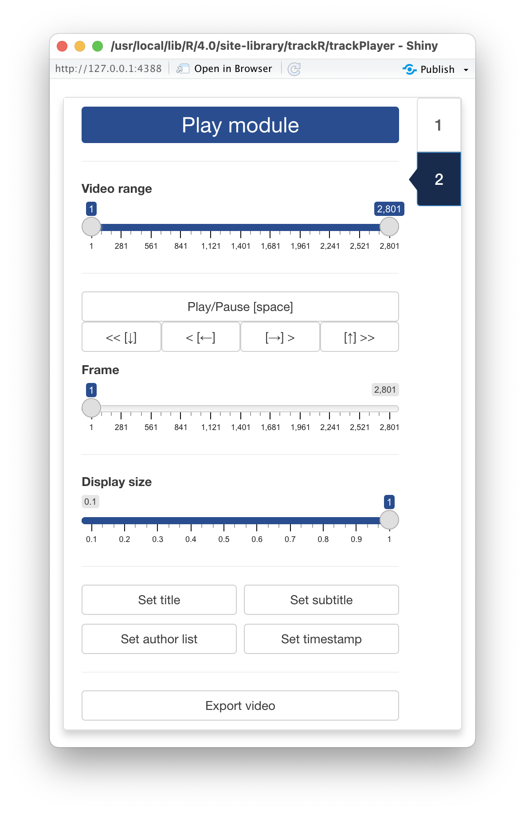

As soon as the video and track files are opened,
trackPlayer will automatically switch to its “Play module”
displayed in the image opposite and will show the video in the display
window with the tracks overlaid (see image below).
At the top of the control panel, you will find the video controls
that allow you to:
- Select with the
Video range slider the portion of the
video that you would like to export.
- Play and pause the video with the
Play/pause button or
with the space bar of your keyboard.
- Advance or rewind the video by 1 frame with the
>
and < buttons or with the right and left arrow keys of
your keyboard.
- Advance or rewind the video by 1 second with the
>> and << buttons or with the up
and down arrow keys of your keyboard.
- Move to any frame of the video with the slider below the video
control buttons.
Below is a Display size control slider that allows you
to change the size of the display window, for instance if the video is
too wide for the screen. This does not affect the quality of the
exported video.
Below are four buttons that will allow you to add text and timestamps
to the exported video. Clicking on any of these 4 buttons will open a
menu with all the necessary controls to set the content, position, size
and color of these pieces of text (see image on the left below). Note
that title, subtitle, and author list are just suggestions. You can
actually use any of these 3 options to add any text you would like.
Timestamp, however, will just do that: add an hour:minute:second:frame
timestamp at the desired location on the video.
Finally, at the bottom of the control panel is an
Export video button that you can press in order to export
an MP4 video showing the results of the tracking overlaid on top of the
frame. This video should play well in all presentation programs
(e.g. PowerPoint, Apple Keynote), on any website, and as supplementary
material for your publications.